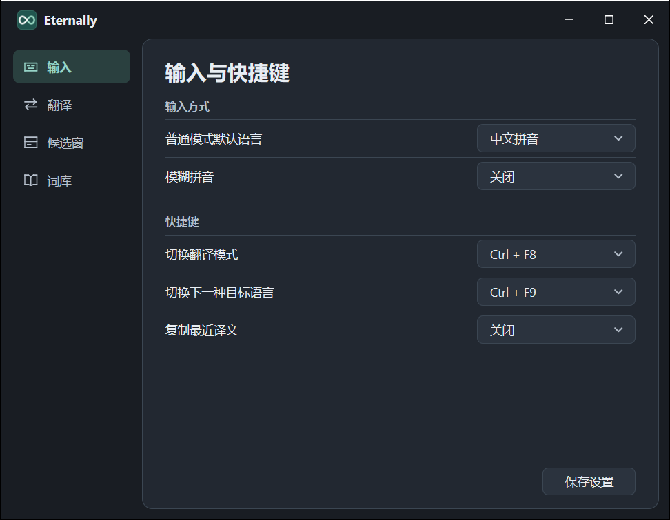

选词和翻译，一个窗口。
中文先用拼音选词组成草稿，待选拼音为空后回车提交译文。输入英语等原文时，预览后按一次回车即可提交。
第一次回车选词，再按回车上屏。
内置例句演示 · 中文选词后再回车，英语等原文按回车提交
从一个候选窗，
到你正在使用的输入框。
先选择原文和目标语言，再输入你的想法。
中文支持拼音选词，英语等原文可以直接输入。
中文先用拼音选词组成草稿，待选拼音为空后回车提交译文。输入英语等原文时，预览后按一次回车即可提交。
Ctrl + F8 切换普通输入和翻译。普通模式短按 Shift，在当前翻译方向的两种语言间切换；回到普通模式，继续使用上次所选语言。
确认上屏后，本地词频会记住你的选择。支持全拼、简拼、模糊音，也能为常用短语设置缩写。
回邮件、和朋友聊天、给变量命名。
同一个输入法，选择不同的翻译方向。
点击切换场景示例
The meeting has been moved to 3 p.m.
会议改到三点
在线可选择原文语言和目标语言，支持英语转中文、中文转日语等组合。常用目标语言可按 Ctrl + F9 依次切换。
离线模型支持中文 → 英语，约 122 MB。
其他语言组合使用在线翻译，会发送待译文本给微软 Edge 翻译服务。
语言、快捷键、字号与候选窗主题，
都可以在设置里调整。

发布后从 GitHub Releases 获取 Windows 安装包，解压到一个文件夹。
运行
Install-ContextIME.cmd
，在 Windows 管理员窗口确认安装。
按 Win + Space 选中 Eternally，在设置里选择翻译方向，然后输入原文。
默认按 Ctrl + F8。普通模式直接输入，翻译模式预览后提交译文。中文、日语先组字选词；英语等直接输入原文，按回车提交译文。Shift 仅在普通模式下切换输入语言，不切换翻译模式。
使用当前翻译方向的原文语言和目标语言。例如「中文 → 日语」切换中文／日语，「英语 → 日语」切换英语／日语。原文选自动检测时，以英语和目标语言作为切换项。
中文支持拼音选词，日语支持罗马字转平假名、片假名；系统安装日语转换支持时，还可提供汉字候选。拉丁字母语言直接输入，其他复杂文字可粘贴到翻译草稿。
普通模式跟随当前输入语言，翻译模式跟随原文语言。英语使用英文符号，中文使用「，。」，日语使用「、。」和日语引号。网址、邮箱及原样输入的代码保留原符号。
网页使用本地内置例句，可选择中文、英语、日语和法语并交换方向。试试 nihao、Hello 或 Thank you，完整在线翻译在 Windows 应用中使用。
在线翻译将待译草稿发送给微软 Edge 翻译服务。本地词频记录保存在电脑上。离线模型当前只支持中文译为英语，在线回退由设置中的开关控制。
右键通知区域的 Eternally 图标，打开「Eternally 设置」，即可修改语言、快捷键、候选窗样式及个人词库。